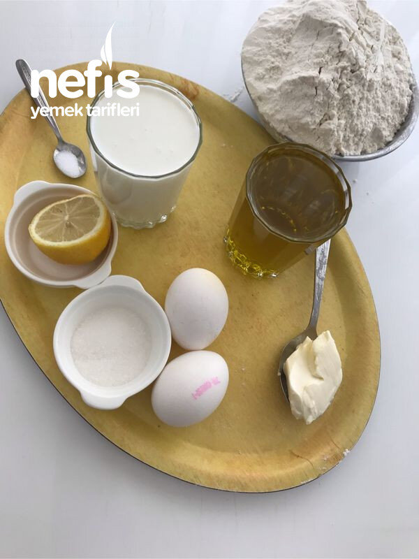

🍽️ 12-14 kişilik⏱️ Hazırlık: 50 dk🔥 Pişirme: 35 dk🏷️ Tatlı Tarifleri🏷️ Şerbetli Tatlılar
Malzemeler
- 1 su bardağı süt (200 mg)
- 1 su bardağı sıvı yağ
- 2 yumurta
- Yarım limon suyu
- 1 kaşık şeker
- Çay kaşığının ucuyla tuz
- 1 kaşık tereyağ veya margarin
- Alabildiği kadar un ( 5 su bardağı kadar kullandım)
- Nişasta (2 paket kadar)
- Yarım kg kadar ceviz içi
- 5 bardak şeker
- 2,5 bardak su
- Yarım limon suyu
Hazırlanışı
- Süt, sıvı yağ, yumurta, limon suyu, şeker, tuz, margarin, karıştırılır.
- Un ilave edilerek yoğurulur.
- Yumuşak bir hamur elde edilir.
- 45 bezeye bölünür.
- Bezeler yuvarlanır.
- Çay tabağı kadar açılır.
- Aralarına bir tatlı kaşığı nişasta konularak beş tanesi üst üste konur.
- Bütün hamurlar aralarına nişasta konularak beşerli olarak dinlendirilir. ( 15-20 dakika kadar).
- Bu arada cevizler rondodan geçirilir.
- Beşli hamurları altına ve üzerine nişasta serperek açabildiğimiz kadar inceltilir.
- Tepsimize koyalım.
- Yufka tepsiden büyük olacağı için fazlalığını tepsinin kenarından bıçağın tersiyle keselim.
- Yufkanın üzerine bir avuç kadar ceviz serpelim.
- İkinci hamuru açalım.
- Onun da fazlalığını bıçağın tersi ile keselim.
- Üzerine yine bir avuç ceviz serpeliyelim.
- Kenardan kestiğimiz hamur parçalarından bir kat daha oluşturup ceviz serpelim.
- İki yufkadan sonra bir kat kadar kenar parçalarını aralara koymaya devam edelim.
- 5. Gurup yufkadan sonra cevizin çoğunu yufkanın her tarafına yayalım.
- Diğer yufkalara aynı şekilde devam edelim.
- Son iki yufka kaldığında tepsi büyüklüğünde bıçak sırtıyla kestiğimiz hamuru temiz bir yere ayıralım.
- Kestiğimiz fazlalıkları yerleştirelim (aralara ceviz serpeleyerek).
- Son yufkaları da en üste yerleştirelim.
- 125 gram margarin.
- 1 çay bardağı sıvı yağı ocağa alıp iyice ısıtalım.
- Yağımız ısınırken baklavamızı keselim.
- İyice ısınan yağı kaşık kaşık baklavanın her tarafına gezdirelim.
- 180-190 derecede üzeri kızarasaya kadar pişirelim.
- Şerbeti:. 5 bardak şeker, 2, 5 bardak su ile şerbeti hazırlayalım.
- Orta kıvamda kaynattığımız şerbete yarı limon suyu ilave edelim.
- Birkaç dakika sonra ocağı kısıp baklava tepsisini ocağın yanına alalım.
- Şerbeti kepçe veya cezve yardımıyla baklavanın üzerine gezdirelim.
- Üzerine tepsi kapatıp şerbetini çekmesini bekleyelim.
- Şerbetini çektikten sonra (6-7 saat) baklavamız hazır.